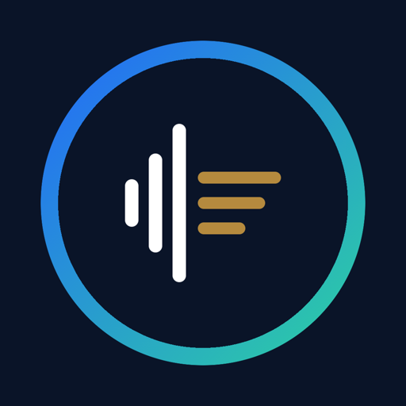
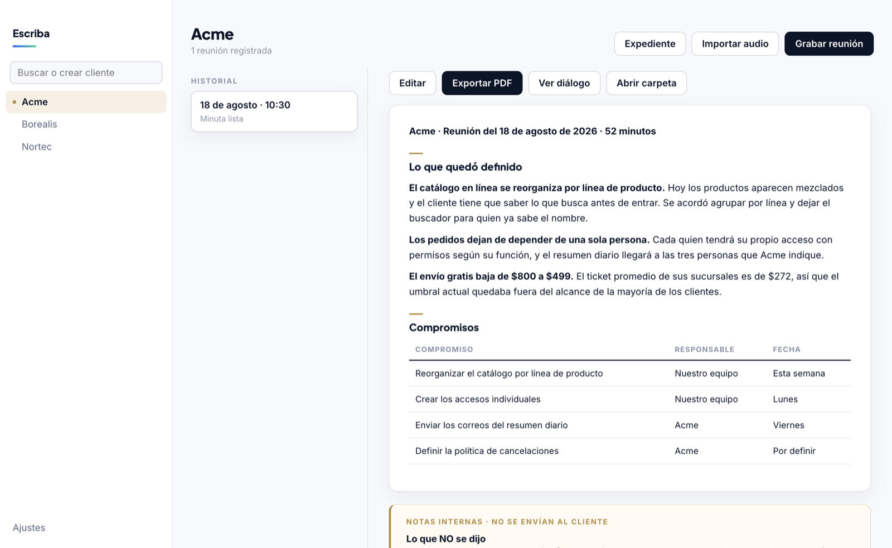
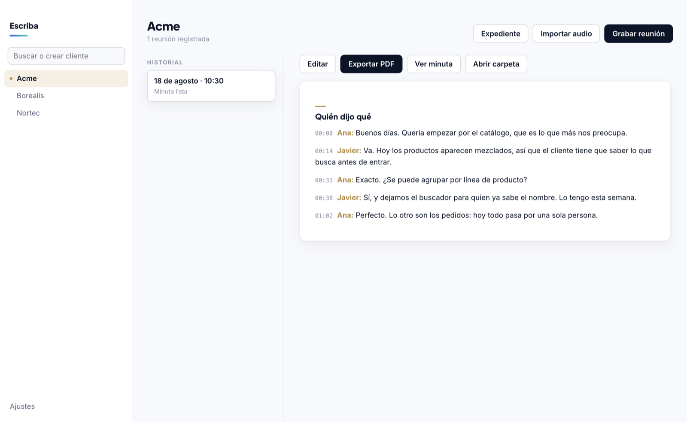

Escriba graba tu reunión, la transcribe en tu propia Mac y la convierte en una minuta con acuerdos y pendientes. Con el expediente del cliente delante.
Gratis y de código abierto · macOS 13 o superior, Apple Silicon

Transcribir una reunión lo hace mucha gente. La diferencia está en lo que pasa después.
Por eso la minuta sabe qué quedó pendiente la vez pasada, y por eso además te entrega unas notas internas que nunca se envían: lo que no se dijo, lo que se volvió a posponer y las oportunidades que aparecieron en la conversación.
Graba tu micrófono y el audio del Mac a la vez. Zoom, Meet o una junta en la sala: da igual.
Las dos pistas se graban por separado, así que distingue tus compromisos de los del cliente. Sin modelos de diarización.
La transcripción corre en tu equipo con whisper.cpp. Nunca se sube una grabación a ningún lado.
Claude Code, tu propia llave de API, o un modelo local con Ollama y sin internet.
La minuta sale lista para mandar por WhatsApp o correo, con tu logo y tus datos.
Un PDF con todas las reuniones y la tabla de compromisos de toda la relación. Para juntas de revisión.
Al final de cada minuta, Escriba añade una sección que nunca sale en el PDF. Es lo que un buen asistente te diría al salir de la junta.
Ejemplo real de salida, con datos de una empresa ficticia.
Tu micrófono y el audio de la llamada se graban en pistas separadas. Por eso la minuta distingue tus compromisos de los del cliente, sin necesidad de un modelo de diarización.

Cmd+Shift+R, sin abrir la ventana.Depende del motor que elijas, y la app te lo dice sin rodeos en Ajustes.
| Motor | Qué sale de tu Mac |
|---|---|
| Claude Code | El texto de la reunión, a Anthropic |
| Tu llave de API | El texto de la reunión, al proveedor que elijas |
| Ollama (local) | Nada |
El audio nunca sale con ninguno de los tres. Las llaves se guardan en el Keychain de macOS, nunca en un archivo.